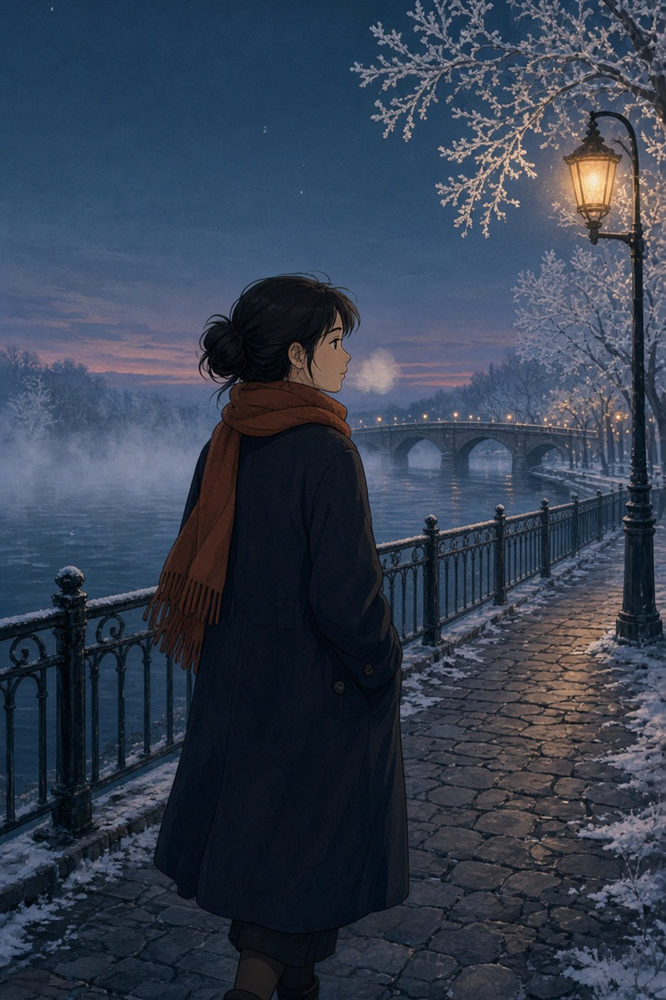

01
本期推荐
《都柏林人》
詹姆斯·乔伊斯
> 作品档案｜出版：2010｜豆瓣：8.6（17,462 人评价）｜类型：短篇小说集 / 现代文学 豆瓣条目：https://book.douban.com/subject/4908872/
WEEKLY CULTURE EDIT · 20
小雪已过。今年交节在 11 月 22 日 15:23（北京时间），下一节气大雪在 12 月 7 日 10:53（北京时间），依据中国科学院紫金山天文台 2026 年日历资料，并与香港天文台二十四节气日期及时间资料一致。离大雪还有十二天。雪还不必很大，夜已经先长起来了。

本期主题
小雪已过，把长夜慢慢过｜本周 10 个文化推荐
20261125
THE ISSUE
以下十项依据截至 2026 年 11 月 25 日的公共榜单、长期口碑与中文讨论交叉挑选。小雪过后、大雪未至，比起多数尚未达到本期入选标准、或不完全贴合这段长夜的新片新书，本期仍更推荐已经站稳的作品，以及官方文旅介绍过雾凇和江夜的城市。以下十项未沿用往期主推，也没用「新作观察位」。
BOOKS
本期精选 3 部
01
本期推荐
詹姆斯·乔伊斯
> 作品档案｜出版：2010｜豆瓣：8.6（17,462 人评价）｜类型：短篇小说集 / 现代文学 豆瓣条目：https://book.douban.com/subject/4908872/
02
本期推荐
史铁生
> 作品档案｜出版：2006｜豆瓣：8.8（13,769 人评价）｜类型：散文 / 思考 豆瓣条目：https://book.douban.com/subject/1003986/
03
本期推荐
三浦紫苑
> 作品档案｜出版：2015｜豆瓣：9.0（36,744 人评价）｜类型：小说 / 运动 豆瓣条目：https://book.douban.com/subject/26210487/
SCREEN
本期精选 3 部
01
本期推荐
王家卫
> 作品档案｜上映：1994｜豆瓣：8.8（942,301 人评价）｜类型：电影 / 剧情 / 爱情 豆瓣条目：https://movie.douban.com/subject/1291999/
02
本期推荐
泷田洋二郎
> 作品档案｜上映：2008｜豆瓣：8.8（753,871 人评价）｜类型：电影 / 剧情 豆瓣条目：https://movie.douban.com/subject/2149806/
03
本期推荐
查理·卓别林｜全球影史经典补课位
> 作品档案｜上映：1925｜豆瓣：9.2（77,169 人评价）｜类型：电影 / 喜剧 / 冒险 / 影史经典 豆瓣条目：https://movie.douban.com/subject/1298817/
EDITOR'S NOTE
文化产品最好的趋势，不是让我们跑得更快，而是让我们重新有能力停下来。
本期完整文章保留了推荐理由、风险提示与参考来源；欢迎从任一部作品出发，再回到自己的书架和片单。
ARCHIVE
持续更新